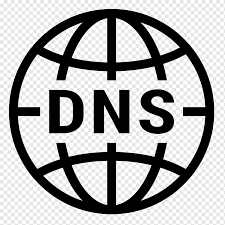

HTTP
HTTP é a sigla para Hypertext Transfer Protocol, ou Protocolo de Transferência de Hipertexto. Esse é o principal protocolo responsável pela transferência de dados na Internet, criando as bases necessárias para a conexão entre um cliente e um servidor.
HTTPS
HTTPS (HTTP Secure) é uma versão do protocolo HTTP criptografado. É normalmente usado SSL ou TLS para criptografar toda a comunicação entre um cliente e um servidor. Essa conexão segura permite aos clientes trocar com segurança dados confidenciais com o servidor, por exemplo, para atividades bancárias ou compras online.
DNS
O Domain Name System (DNS) é essencial para a navegação na internet, atuando como uma "lista telefônica" que traduz nomes de domínio legíveis por humanos, como nytimes.com, em endereços IP, como 192.168.1.1 (IPv4) ou 2400:cb00:2048:1::c629 (IPv6).
FTP
o FTP é um protocolo usado para transferir arquivos por uma rede de computadores, desde uma local à internet. Basicamente, permite a troca de arquivos entre dois computadores de modo direto, em que um ganha acesso às pastas do outro.

DHCP
O servidor DHCP, da sigla Dynamic Host Configuration Protocol, é um protocolo de configuração dinâmica para uma rede de computadores. Isso envolve uma série de definições de gerenciamento que são usadas para tornar o processo de configuração de dispositivos em redes IP automatizadas.

SSH
SSH ou Cápsula de Segurança é um protocolo de administração remota que permite aos usuários controlar e modificar seus servidores pela Internet.